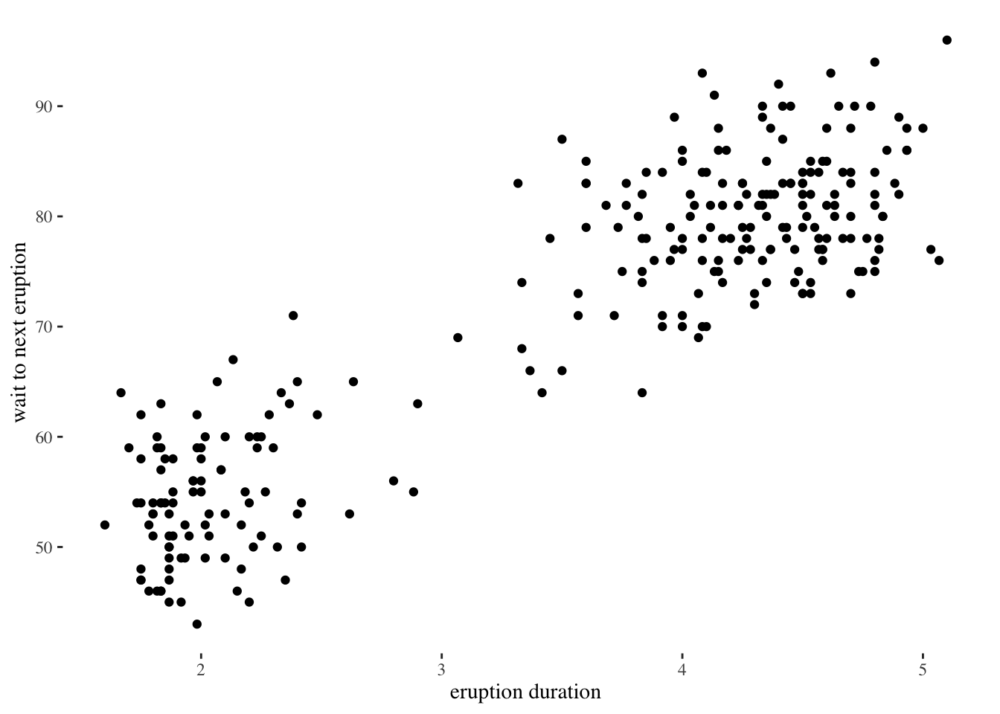

library(tidyverse)── Attaching core tidyverse packages ──────────────────────── tidyverse 2.0.0 ──
✔ dplyr 1.1.3 ✔ readr 2.1.4
✔ forcats 1.0.0 ✔ stringr 1.5.0
✔ ggplot2 3.4.3 ✔ tibble 3.2.1
✔ lubridate 1.9.2 ✔ tidyr 1.3.0
✔ purrr 1.0.2
── Conflicts ────────────────────────────────────────── tidyverse_conflicts() ──
✖ dplyr::filter() masks stats::filter()
✖ dplyr::lag() masks stats::lag()
ℹ Use the conflicted package (<http://conflicted.r-lib.org/>) to force all conflicts to become errorslibrary(ggthemes)
data("faithful")
rename(faithful, all_of(c(wait_to_next_eruption = "waiting", eruption_duration = "eruptions"))) eruption_duration wait_to_next_eruption
1 3.600 79
2 1.800 54
3 3.333 74
4 2.283 62
5 4.533 85
6 2.883 55
7 4.700 88
8 3.600 85
9 1.950 51
10 4.350 85
11 1.833 54
12 3.917 84
13 4.200 78
14 1.750 47
15 4.700 83
16 2.167 52
17 1.750 62
18 4.800 84
19 1.600 52
20 4.250 79
21 1.800 51
22 1.750 47
23 3.450 78
24 3.067 69
25 4.533 74
26 3.600 83
27 1.967 55
28 4.083 76
29 3.850 78
30 4.433 79
31 4.300 73
32 4.467 77
33 3.367 66
34 4.033 80
35 3.833 74
36 2.017 52
37 1.867 48
38 4.833 80
39 1.833 59
40 4.783 90
41 4.350 80
42 1.883 58
43 4.567 84
44 1.750 58
45 4.533 73
46 3.317 83
47 3.833 64
48 2.100 53
49 4.633 82
50 2.000 59
51 4.800 75
52 4.716 90
53 1.833 54
54 4.833 80
55 1.733 54
56 4.883 83
57 3.717 71
58 1.667 64
59 4.567 77
60 4.317 81
61 2.233 59
62 4.500 84
63 1.750 48
64 4.800 82
65 1.817 60
66 4.400 92
67 4.167 78
68 4.700 78
69 2.067 65
70 4.700 73
71 4.033 82
72 1.967 56
73 4.500 79
74 4.000 71
75 1.983 62
76 5.067 76
77 2.017 60
78 4.567 78
79 3.883 76
80 3.600 83
81 4.133 75
82 4.333 82
83 4.100 70
84 2.633 65
85 4.067 73
86 4.933 88
87 3.950 76
88 4.517 80
89 2.167 48
90 4.000 86
91 2.200 60
92 4.333 90
93 1.867 50
94 4.817 78
95 1.833 63
96 4.300 72
97 4.667 84
98 3.750 75
99 1.867 51
100 4.900 82
101 2.483 62
102 4.367 88
103 2.100 49
104 4.500 83
105 4.050 81
106 1.867 47
107 4.700 84
108 1.783 52
109 4.850 86
110 3.683 81
111 4.733 75
112 2.300 59
113 4.900 89
114 4.417 79
115 1.700 59
116 4.633 81
117 2.317 50
118 4.600 85
119 1.817 59
120 4.417 87
121 2.617 53
122 4.067 69
123 4.250 77
124 1.967 56
125 4.600 88
126 3.767 81
127 1.917 45
128 4.500 82
129 2.267 55
130 4.650 90
131 1.867 45
132 4.167 83
133 2.800 56
134 4.333 89
135 1.833 46
136 4.383 82
137 1.883 51
138 4.933 86
139 2.033 53
140 3.733 79
141 4.233 81
142 2.233 60
143 4.533 82
144 4.817 77
145 4.333 76
146 1.983 59
147 4.633 80
148 2.017 49
149 5.100 96
150 1.800 53
151 5.033 77
152 4.000 77
153 2.400 65
154 4.600 81
155 3.567 71
156 4.000 70
157 4.500 81
158 4.083 93
159 1.800 53
160 3.967 89
161 2.200 45
162 4.150 86
163 2.000 58
164 3.833 78
165 3.500 66
166 4.583 76
167 2.367 63
168 5.000 88
169 1.933 52
170 4.617 93
171 1.917 49
172 2.083 57
173 4.583 77
174 3.333 68
175 4.167 81
176 4.333 81
177 4.500 73
178 2.417 50
179 4.000 85
180 4.167 74
181 1.883 55
182 4.583 77
183 4.250 83
184 3.767 83
185 2.033 51
186 4.433 78
187 4.083 84
188 1.833 46
189 4.417 83
190 2.183 55
191 4.800 81
192 1.833 57
193 4.800 76
194 4.100 84
195 3.966 77
196 4.233 81
197 3.500 87
198 4.366 77
199 2.250 51
200 4.667 78
201 2.100 60
202 4.350 82
203 4.133 91
204 1.867 53
205 4.600 78
206 1.783 46
207 4.367 77
208 3.850 84
209 1.933 49
210 4.500 83
211 2.383 71
212 4.700 80
213 1.867 49
214 3.833 75
215 3.417 64
216 4.233 76
217 2.400 53
218 4.800 94
219 2.000 55
220 4.150 76
221 1.867 50
222 4.267 82
223 1.750 54
224 4.483 75
225 4.000 78
226 4.117 79
227 4.083 78
228 4.267 78
229 3.917 70
230 4.550 79
231 4.083 70
232 2.417 54
233 4.183 86
234 2.217 50
235 4.450 90
236 1.883 54
237 1.850 54
238 4.283 77
239 3.950 79
240 2.333 64
241 4.150 75
242 2.350 47
243 4.933 86
244 2.900 63
245 4.583 85
246 3.833 82
247 2.083 57
248 4.367 82
249 2.133 67
250 4.350 74
251 2.200 54
252 4.450 83
253 3.567 73
254 4.500 73
255 4.150 88
256 3.817 80
257 3.917 71
258 4.450 83
259 2.000 56
260 4.283 79
261 4.767 78
262 4.533 84
263 1.850 58
264 4.250 83
265 1.983 43
266 2.250 60
267 4.750 75
268 4.117 81
269 2.150 46
270 4.417 90
271 1.817 46
272 4.467 74ggplot(
data = faithful,
mapping = aes(x = eruptions, y = waiting)
) + geom_point() + labs(x="eruption duration", y="wait to next eruption") +
theme_tufte()